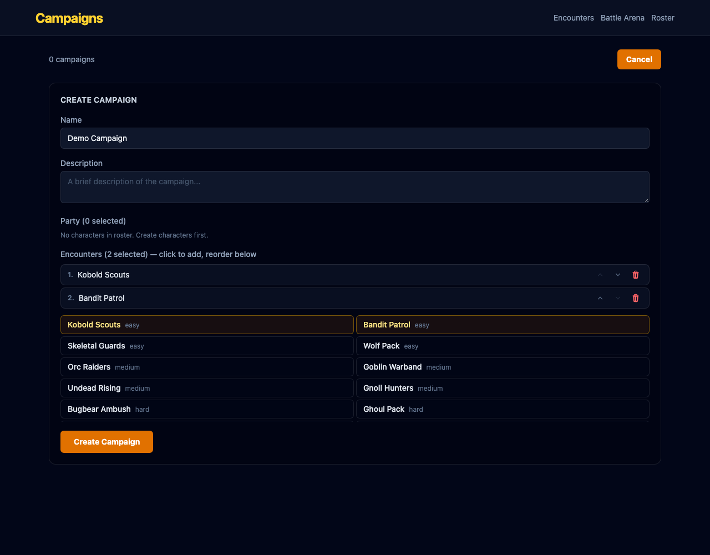

Replaces text labels in the campaign creation encounter reorder list with icon buttons.
Buttons replaced with: ↑ chevron | ↓ chevron | 🗑 trash icon SVG. Cleaner, more compact, matches the icon style used elsewhere in the app.

src/pages/dm/CampaignListPage.tsx — Targeted replacement of button text with inline SVG icons.